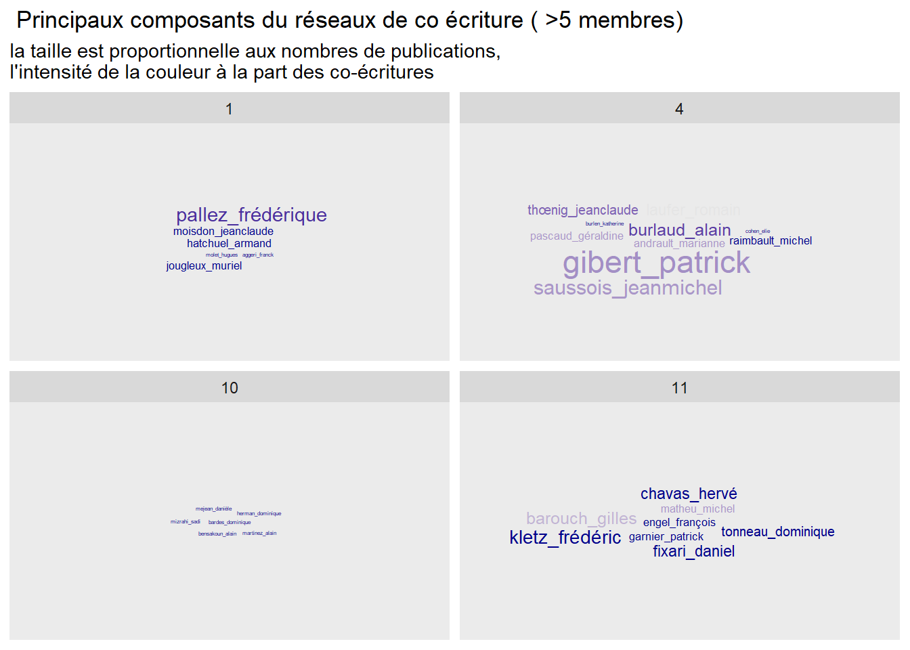
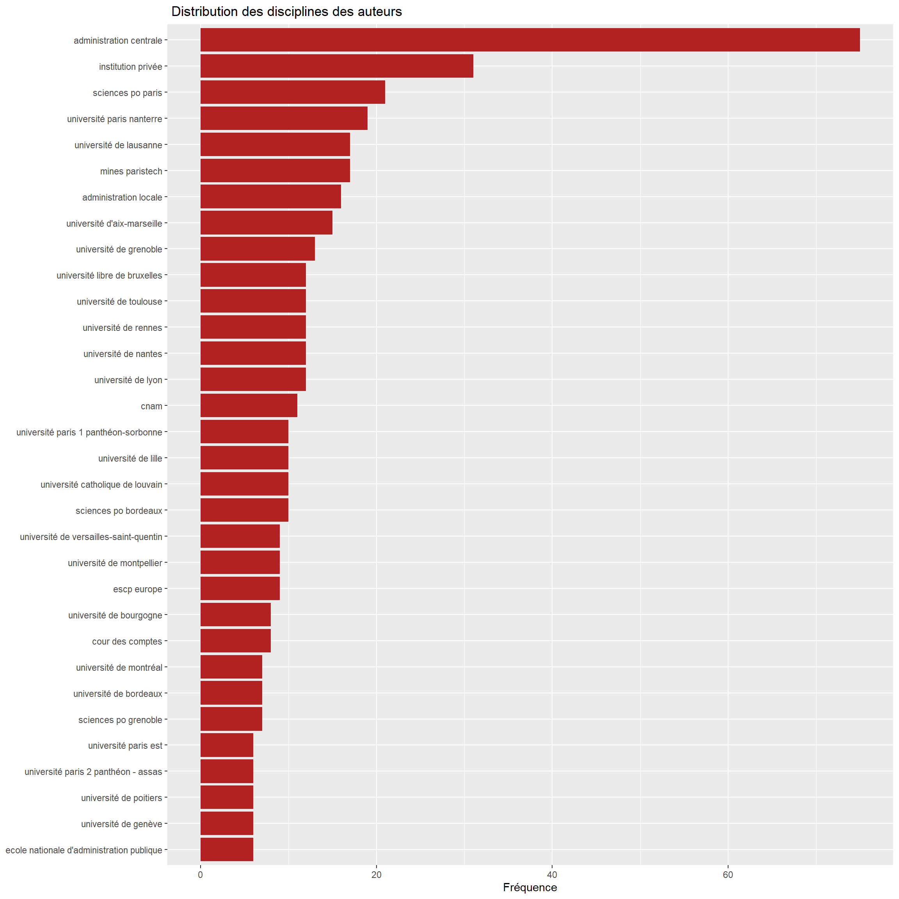

PMP 40ans : une analyse textuelle de la production
Analyse de réseau
Author
CB MB SB
Published
June 29, 2023
Code
library(tidyverse) #on ne peut plus s'en passerlibrary(quanteda) # les bases du nlplibrary(spacyr)library(readr) #lire les donneeslibrary(stringr) #manipuler le textelibrary(pals)library(ape) #pour de jolis dendogrammeslibrary(tidytext) #du nlplibrary(proustr) #un package sympa pour les dicoslibrary(mixr)library(widyr)library(reshape2) library(igraph) #classic des reseauxlibrary(ggrepel) #gestion des labelslibrary(ggraph) library(gglorenz) #courbe de concentrationlibrary('extrafont') #c'est pour igraph# Import des fontes du système - cela peut être long#font_import()#fonts() # Liste des polices disponibles#loadfonts(device = "pdf") # Indiquer device = "pdf" pour produire un pdf
Le projet est simple : ingérer près de 40 ans de production de la revue PMP, pour en retracer les évolutions principales en terme d’autorialité et de contenu thématique.
C’est une démarche de lecture automatique et algorithmique qui vise à retracer la vie d’un processus de production éditoriale et d’une communauté intellectuelle. La communauté intellectuelle est initiée par les acteurs de la revue : comités, rédacteurs. Le processus de production dépend largement du régime de régulation de la communauté universitaire dont on sait qu’il est transformé conjointement par l’appétit des groupes éditoriaux, par l’“impératif politique de la divulgation d’indicateurs de performances, de l’évolution des technologie éditoriales, des modes de financements et de critères d’avancement des carrières.
Le contexte est une évolution d’un modèle vocationnel vers un modèles professionnel, pour reprendre une thématique weberienne dont nous ne développerons pas ici les conséquences. C’est une question vive dans les questions du nursing, elle touche un peu l’éducation
Dans ce document on retrace les calculs, mais leur production sera guidée par des conférences d’experts : des animateurs, des rédacteurs en chefs, des auteurs, qui donneront sur un registre qualitatif (réunion de groupe, note de synthèse). Cartographier exige le retour de ceux qui sont catégorisés.
La grille d’analyse est sans doute celle d’une sociologie des professions avec l’hypothèse de la mutation du métier d’universitaire ou d’enseignants chercheurs passant d’un modèle vocationnel à un modèle professionnel. Transformation largement étudié chez les infirmières qui vivent au plus plus au point cet antagonisme de la mission, qui se paye de fierté, et le l’engagement quotidien qui relève de la profession. On est pas héros tout les jours, et les jours sans héroïsme, la raison se fait ailleurs
L’analyse des évolutions éditoriale visera à tester cette hypothèse.
On commence à analyser les auteurs et par conséquent le procès de production.
On continue par les contenus( résume+titre) avec une approche originale de modèle de topic structural.
Un objectif intermédiaire : la constitution d’un corpus en CC et open. le sens de la recherche est d’observer les mutations des stratégies de publication et de de contenu. au travers d’une micro histoire quantitative*
Cadre de l’analyse
la production d’un corpus éditorial, une revue, est le fruit de plusieurs processus
un processus de proposition ; nous n’avons accès qu’à la sélection.
un processus d’acceptation qui reflète la politique éditoriale
un processus de soumissions aux modes du temps, l’actualité peut etre exigeante.
des efforts de la revue pour obtenir des propositions : les coloques
Le réseau des auteurs
Avant de s’intéresser aux contenus, regardons les acteurs, qui a écrit avec qui?
Le corpus total est constitué de 1025 articles, nous allons en identifier les 1070 auteurs et le réseau de leurs co écritures.
Analyse du nombre d’auteurs par article
Un petits tiers sont des articles à auteurs multiples dont 20% en ont deux, au-delà c’est moins de 10%.
Code
library(readr)PMP<-read_csv("data/PMPLast3.csv", locale =locale(encoding ="WINDOWS-1252"))dn<-PMP %>%select(Key, Author,`Publication Year`,Title, `Abstract Note`) %>%rename(Year=`Publication Year`)#trouver une meilleure solution pour tokeniser les auteursdn$Author1<-str_replace_all(dn$Author,("-"),"")dn$Author1<-str_replace_all(dn$Author1,(",\\s"),"_")dn$Author1<-str_replace_all(dn$Author1,("\\.\\s*"),"_")dn$Author1<-str_replace_all(dn$Author1,";\\s","/") dn$Author1<-str_replace_all(dn$Author1,"\\s","") dn$Author1<-str_replace_all(dn$Author1,"/"," ") dn<-dn %>%mutate(n_words = stringr::str_count(Author1, ' ')+1)ggplot(dn, aes(x=n_words))+geom_histogram(fill="firebrick")+theme_minimal()+labs(title="Distribution du nombre d'auteurs par article",x="nombre d'auteurs par article",y="nombre d'articles",caption="corpus PMP")
La tendance est clairement en faveur des auteurs multiples et le tournant semble être vers 2005.On passe de 1.3 à 2.0 Il faut comparer au nombre d’articles par an mais c’est assez peu important, IL y a un changement qui s’opère à partir de 2002; et clairement un changement de régime?
Code
dn_year<-dn %>%group_by(Year) %>%summarise(n_paper=mean(n_words))ggplot(dn_year, aes(x=Year,y=n_paper))+geom_smooth(method ="loess", span=0.35)+ylim(1,2.5)+theme_minimal()+labs(title="Evolution du nombre d'auteurs par article",y="nombre moyen d'auteurs par article",x="Année de publication",caption="corpus PMP")
Code
ggsave("./images/network0.jpeg", width =27, height =18, units ="cm")
Le classement des auteurs par nombre de contributions. La figure de Patrick Gibert domine, mais elle n’écrase pas d’autres auteurs qui ont une contribution généreuse.
Code
corp <-corpus(dn$Author1, docvars=(dn)) # corps des auteurstok <-tokens(corp, remove_punct =FALSE, tolower =FALSE, include_docvars =TRUE)authors<-tok %>%as.list()%>%unlist() %>%as.data.frame() %>%mutate(n=1)authors$nom<-authors[,1]authors<- authors %>%group_by(nom) %>%summarise(n=sum(n))%>%arrange(desc(n))ggplot(authors%>%filter(n>2),aes(x=reorder(nom,n),y=n))+geom_bar(fill="firebrick",stat="identity")+theme_minimal()+coord_flip()+labs(title="Distribution du nombre d'articles par auteur",caption="corpus PMP",x="Auteurs",y="nombre d'articles")
Code
#pour qualification (discipline,titre,Institution)#write.csv(authors, file="authors.csv")ggsave("./images/author05.jpeg", width =27, height =18, units ="cm")
Examinons de plus près la décomposition entre le nombre d’articles écrits seul et à plusieurs pour chacun des auteurs
la corrélation est plutôt positive, plus on à écrit seul et plus on écrit avec les autres, sauf un déchoché pour ceux qui n’ont écrit une fois. Il y a corrélation inverse entre écrire une fois ensemble et une fois seul.
Deux stratégies se dégagent , la médiane est occuppé par le principal animateur du champs.
Code
dfm_auth<-dfm(tok)%>%convert(to="data.frame")%>%rename(document=doc_id)foo<-melt(dfm_auth) %>%group_by(document) %>%summarise(n=sum(value))foo<-melt(dfm_auth) %>%left_join(foo)%>%mutate(n_seul=ifelse(value==1& n==1,1,0), n_plusieurs=ifelse(value==1& n>1,1,0))%>%group_by(variable) %>%summarise(n_seul=sum(n_seul), n_plusieurs=sum(n_plusieurs), n=n_seul+n_plusieurs)ggplot (foo, aes(x=n_seul,y=n_plusieurs))+geom_point(aes(size=n),color="coral3")+geom_smooth(method ="loess")+theme_minimal()+labs(title ="Le nombre d'articles signés seul et à plusieurs", x="articles signés seul", y="articles signés à plusieurs" )
Analyse de la concentration
Un gini très faible et une trés grande égalité, il n’y a pas pas d’accaparrement de la parole par un ou plusieurs réseaux. Au contraire plusieurs réseaux qui se constituent au cours du temps.
Le coeurs ce sont les 25% des auteurs qui ont publiés plusieurs fois et constituent 40% du corpus. Iles forment une masse primaire à laquelle s’aggrège une grande diversité de contribrution.
Code
library(ineq) #pour le ginilibrary(gglorenz) #courbe de concentrationgini<-round(ineq(authors$n,type =c("Gini")),2)gini
[1] 0.24
Code
g05b<-authors %>%ggplot(aes(n)) +stat_lorenz(desc =TRUE,size=1.2,color="darkred") +coord_fixed() +geom_abline(linetype ="dashed") +theme_minimal() +labs(x ="Part cumulée des auteurs",y ="Part cumulée des articles",title ="Concentration des contributions",caption ="corpus PMP") #+ annotate("text", x=.35, y=.6, size=2,label= paste0("indice de Gini=", gini))g05b
Code
ggsave("./images/author06.jpeg", width =27, height =18, units ="cm")
Le réseaux des co-auteurs
Une part importante n’a écrit que des articles uniques, une part d’entre eux l’ayant écrit avec un co-auteur, on va réduire l’analyse aux auteurs ayant écrit au moins un article avec un autres auteurs
clu <-components(g1)g<-as.data.frame(clu[[1]]) %>%rename(composant=`clu[[1]]`)g$variable<-rownames(g)g_n<-g %>%group_by(composant)%>%mutate(n=1) %>%summarise(membres=sum(n), noms=paste(substr(variable,1,15), collapse =",\n"))%>%mutate(nom=substr(noms,1,90))authors_short<-foo1 %>%left_join(g) %>%left_join(g_n)library(ggwordcloud)ggplot(authors_short %>%filter(membres>5))+geom_text_wordcloud(aes(label=variable, size=n, color=n_plusieurs/n))+facet_wrap(vars(composant))+scale_color_gradient(low="grey90",high="darkblue")+labs(title=" Principaux composants du réseaux de co écriture ( >5 membres)",subtitle="la taille est proportionnelle aux nombres de publications,\nl'intensité de la couleur à la part des co-écritures")

Code
ggsave("./images/authorClique_b2003.jpeg", width =27, height =18, units ="cm")
On calcule deux éléments : d’abord l’appartenance à des communautés, ensuite la centalité des acteurs.
Une détection des communautés par un algo fast_greedy est réalisée au préalable. Elle est identifier 215 communautés ce qui est élevé si l’on prend en compte le nombre d’institutions, à moins que la correspondances des cliques et des instituions soit finalement ténue. C’est une relation à explorer et à tester.
Le graphe est largement déconnecté et se présentent comme une multiplicité d’archipels apparemment isolés ( il faudrait examiner aussi le réseau des co-citations).
Le chaînage le plus long réunit 31 individus. Ils sont en mode de 2. Le réseaux de co-auteurs est une collections de hardes isolées les unes des autres, c’est aussi le fait d’une collectivité petite qui ne peut développer toutes les ramifications de ses réseaux. La taille est aussi un terreau.
Une clique d’un graphe non orienté est, en théorie des graphes, un sous-ensemble des sommets de ce graphe dont le sous-graphe induit est complet, c’est-à-dire que deux sommets quelconques de la clique sont toujours adjacents.Ici on utilise une autre notion ( rechercher de meilleures définitions)
sizes<-as.data.frame(sizes(c1))ggplot(sizes,aes(x=Freq))+geom_histogram(fill="chartreuse4")+theme_minimal()+labs(title="Distribution du nombre d'auteurs par communauté",x="Taille de la communauté",y="Effectif", caption="corpus PMP")
Code
membership<-membership(c1)#crossing(c1, g1)
On calcule tant qu’à faire la centralité des nœuds et de suite on va la chercher à l’expliquer
la centralité est liée en échelle au nombre de publication, mais la corrélation est lâche. Un modèle lm loglog montre qu’évidemment écrire seul ne contribue pas à la centralité. et que la centralité dépend du nombre de co-authorship mais aussi de la taille du réseau : plus les auteurs du réseau d’un auteurs s’associent et plus il bénéficie de l’effet de centralité. le r2 est substantiel, les p très faibles.
Code
#mesure de centralitébetween<-as.data.frame(betweenness(g1))%>%rename(between=`betweenness(g1)`)between$variable<-rownames(between)authors_short<-authors_short %>%left_join(between)ggplot(authors_short,aes(x=log(n), y=log(between+1)))+geom_point()+geom_smooth()+theme_minimal()
Call:
lm(formula = log(between + 1) ~ log(n_plusieurs + 1) + log(n_seul +
1) + log(n + 1) + log(membres + 1), data = authors_short)
Residuals:
Min 1Q Median 3Q Max
-1.30839 -0.06105 0.06626 0.06626 1.69043
Coefficients:
Estimate Std. Error t value Pr(>|t|)
(Intercept) -1.04401 0.08801 -11.862 < 2e-16 ***
log(n_plusieurs + 1) 1.49494 0.29196 5.120 5.44e-07 ***
log(n_seul + 1) 0.51644 0.19754 2.614 0.00939 **
log(n + 1) -0.78572 0.33621 -2.337 0.02009 *
log(membres + 1) 0.44252 0.05515 8.024 2.29e-14 ***
---
Signif. codes: 0 '***' 0.001 '**' 0.01 '*' 0.05 '.' 0.1 ' ' 1
Residual standard error: 0.3355 on 302 degrees of freedom
(404 observations deleted due to missingness)
Multiple R-squared: 0.5081, Adjusted R-squared: 0.5016
F-statistic: 77.98 on 4 and 302 DF, p-value: < 2.2e-16
Reste à donner la carte générale, elle a une forme de boite de petri.
on construit le graphe aves les éléments suivants,
les noeuds sont constitué des auteurs
la taille des noeuds correspond au nombre total d’articles
la taille des polices au nombre d’articles écrits à plusieurs auteurs.
la couleur des noeuds : les communautés identifiées (cliques) sup à 9 éléments ( le autres sont en gris)
la taille des arcs : le nombre d’article auxquels les auteurs sont associés
On s’apercoit avec cette représentation que le flux des artciles est organisé en deux courants
des auteurs fidèles qui contribuent de manière individuelle répétant un geste de publication et ceux qui constituent des réseaux jouant des co -authorings
trois types d’acteurs * des auteurs occasionnels * des auteurs fidèles * des auteurs organisés
set.seed(1984)l <-layout_with_fr(g1)V(g1)$label <-ifelse(authors_short$n>2,authors_short$variable,NA)V(g1)$label.color <-"grey12"V(g1)$label.cex <-1+authors_short$n*0.02V(g1)$size <- authors_short$nV(g1)$color <- authors_short$composantE(g1)$width <-E(g1)$weight*2.5E(g1)$color <-"grey70"png("./images/my_plotb2023.png", 1000, 1000)plot(g1,layout=l,curved=TRUE,vertex.label.family="Arial",label.dist=1)title("Les constellations des auteurs de PMP",sub ="Sélection des auteurs ayant publié au moins une fois à plusieurs :\n taille label = nombre d'articles publiés \n couleur : communautés les plus nombreuses", cex.main=1.5,col.main="black")#library(ggnetwork)#ggnetwork(g1, layout = l, cell.jitter = 0.75)#ggsave("./images/nt_auth.jpeg", width = 27, height = 18, units = "cm")
Conclusion de l’analyse
ce qui produit le champs vient de trois grandes forces
des héros romantiques
des réseaux stratégiques
des opportunistes
la limite, on ne regarde que le labeur pas les héritages. ce sera une autre histoire par le collège invisible des citations.
reste à mieux explorer la dynamique des entrants, sortants, et répétéurs?
Code
corp <-corpus(dn$Author1, docvars=(dn)) # corps des auteueuttok <-tokens(corp, remove_punct =FALSE, tolower =FALSE, include_docvars =TRUE)authors<-tok %>%as.list()%>%unlist() %>%as.data.frame() %>%mutate(n=1)authors$nom<-authors[,1]authors<- authors %>%group_by(nom) %>%summarise(n=sum(n))%>%arrange(desc(n))ggplot(authors%>%filter(n>3),aes(x=reorder(nom,n),y=n))+geom_bar(fill="firebrick",stat="identity")+theme_minimal()+coord_flip()+labs(title="Distribution du nombre d'articles par auteur",caption="corpus PMP",x="Auteurs",y="nombre d'articles")
Code
ggsave("./images/source0.jpeg", width =27, height =18, units ="cm")#pour qualification (discipline,titre,Institution)#write.csv(authors, file="authors.csv")library(readxl)PMPAuthors <-read_excel("data/PMPAuthors.xlsx") %>%rename(m=n)authors<-authors %>%left_join(PMPAuthors,by="nom")foo<-authors %>%select(nom,n,Discipline1, Discipline2) %>%pivot_longer(-c(nom,n), names_to ="Discipline", values_to="value")%>%group_by(value)%>%summarise(n=n())%>%na.omit() %>%filter(n>5)ggplot(foo, aes(x =reorder(value, n), y=n))+geom_bar(stat="identity",fill="firebrick")+coord_flip()+labs(title="Distribution des contributions des auteurs",x=NULL, y="Fréquence")
Code
ggsave("./images/source1.jpeg", width =27, height =18, units ="cm")foo<-authors %>%mutate(Origine=tolower(Origine))%>%group_by(Origine)%>%summarise(m=n())%>%filter(m>5& m<100 )ggplot(foo, aes(x =reorder(Origine, m), y=m))+geom_bar(stat="identity", fill="firebrick")+coord_flip()+labs(title=" Distribution des disciplines des auteurs",x=NULL, y="Fréquence")

Code
ggsave("./images/source2.jpeg", width =27, height =18, units ="cm")